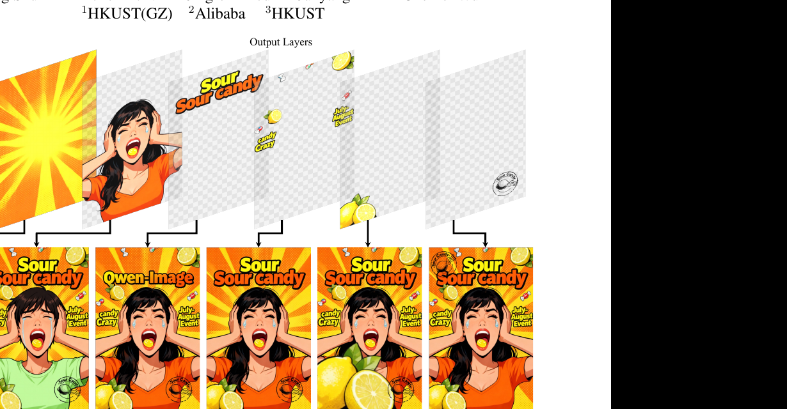
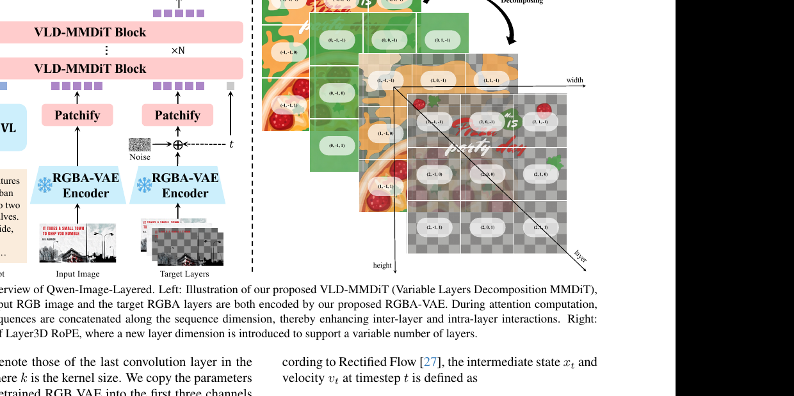
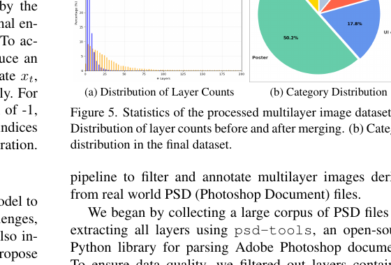
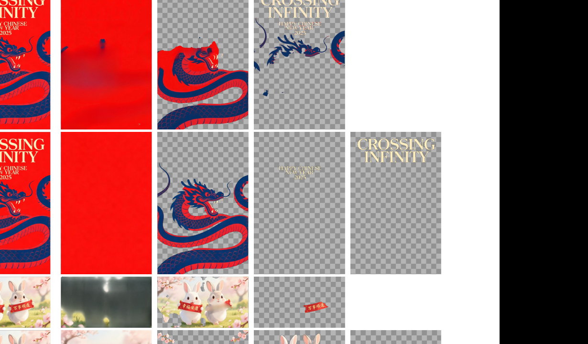

- 一句话：把一张普通的 RGB 图，用一个端到端扩散模型「拆」成多张语义独立的 RGBA 图层（背景、人物、文字、装饰各占一层），从而获得 Photoshop 式的「天生可编辑性」——改一层不影响其它层。
- 解决的痛点：传统 raster 图把所有内容糊在一张画布上，编辑时改动会沿着纠缠的像素空间扩散，导致「语义漂移」（人脸被改了身份）和「几何错位」（物体位置/比例被动改变）。
- 关键做法：三件套——(1) RGBA-VAE 让 RGB 和 RGBA 共享同一个 latent 空间；(2) VLD-MMDiT（变层数分解 MMDiT，配 Layer3D RoPE）支持输出任意层数；(3) 多阶段训练把预训练的 Qwen-Image 逐步改造成图层分解器。再加一条从 PSD 文档抽取标注多层数据的流水线。
- 效果：在 Crello 数据集上 Alpha soft IoU 达 0.87（LayerD 仅 0.75），RGB L1 = 0.0594（LayerD 0.0709），全面超越现有分解方法。
- 能拿来干嘛：官方开源（QwenLM 组织，含代码与权重）。可用于「先分层 → 再精准编辑（换色/替换/移动/缩放/删除）→ 重新合成」的一致性编辑工作流，也可做文本到多层图（T2L）生成。

1. 问题与动机
近年的图像生成模型已经能合成惊艳的画面，但一旦进入图像编辑场景——希望在保留结构和未改动区域语义的前提下做精确修改——就常常翻车。两个典型病症：语义漂移（semantic drift），比如想换衣服却把人脸的身份也改了；几何错位（geometric misalignment），比如想换颜色却把物体的位置或比例也动了。
想象你要修改一幅已经烘干的水彩画：所有颜料早已渗进同一张纸里，互相洇开。你想把画里的「红苹果」改成「绿苹果」，结果一动笔，旁边的桌布、阴影、背景都跟着花了——因为它们物理上就是同一摊颜料。而设计师用的 Photoshop 完全不同：苹果在一个独立图层、桌布在另一个图层，改苹果那层，其它层纹丝不动。Qwen-Image-Layered 想做的，就是把「烘干的水彩画」自动还原成「分好层的 PSD 工程文件」。
现有方法的 gap（具体说）：
- 全局编辑方法（如 InstructPix2Pix、SeedEdit、Qwen-Image-Edit 等）把整张图在 latent 空间里重新生成。由于生成本身是概率随机的，无法保证未编辑区域的一致性——重画一遍，没让你改的地方也会悄悄变。
- mask 引导的局部编辑（如 DiffEdit）把修改限制在用户给的 mask 内。但在遮挡、软边界的复杂场景里，真正该编辑的区域往往是模糊的，mask 圈不准，所以并没有从根本上解决一致性。
作者的核心论断：与其在「纠缠的像素空间」里打补丁，不如换一种天生解耦的表示——把图像表示成一叠语义分解的 RGBA 图层。编辑只作用在目标层，物理上与其它内容隔离，语义漂移和几何错位就被从根上消除了。
2. 相关工作与发展脉络
这条线可以讲成一个故事。早期做「图像分层」是在颜色空间里软分割（Aksoy 等）或物体级分解（PCNet）。分层生成这一支始于 Text2Layer（先训两层 autoencoder 再训扩散），LayerDiffuse 把「透明度」直接塞进 VAE 并用两个 LoRA + 共享注意力生成前/背景；LayerDiff、ART 设计了更复杂的层内/层间注意力来生成语义一致的多层图，ART 还能控制图层数量。分解方向（把已有图拆回多层）则有 LayerD：用分割 + matting 抽出最上层前景，再 inpainting 补全背景，逐层递归——但递归推理会误差累积，且分割在复杂版式 + 半透明层下力不从心。LayerDecomp 用两个独立 VAE 分别处理输入 RGB 和输出 RGBA，结果两者 latent 分布对不上（distribution gap）。
Qwen-Image-Layered 站在 Qwen-Image 这个强力 T2I 基座上，针对上述痛点逐一回应：用共享 latent 的 RGBA-VAE 弥合分布 gap；用 VLD-MMDiT 端到端一次产出变长图层、避免递归误差；用多阶段训练把通用生成器改造成分解器。
3. 方法总览（先建立直觉）
整套系统要回答一个问题：给定一张 RGB 图 $I$，怎么吐出 $N$ 张 RGBA 图层 $L_1,\dots,L_N$，把它们按 alpha 叠加回去正好等于 $I$？这里 $N$ 是不固定的——有的图 2 层够了，海报可能要十几层。
方法分三块拼起来：
- 表示层（RGBA-VAE）：扩散在 latent 空间里跑，所以先要一个能同时编码 RGB（3 通道）和 RGBA（4 通道，多一个 alpha 透明度）的 VAE，且二者落在同一个 latent 分布里。这样「输入图的 latent」和「各图层的 latent」才能在一个空间里被同一个扩散模型处理。
- 生成层（VLD-MMDiT）：一个 MMDiT（Multi-Modal Diffusion Transformer）骨干。把文本（Qwen2.5-VL 编码）、输入图 latent、目标多层 latent 三段序列拼在一起做注意力，让模型同时看到层内细节和层间关系。关键是 Layer3D RoPE：在原本的 (高, 宽) 位置编码上加一个「层」维度，使模型能区分第几层、并支持任意层数。
- 训练层（多阶段）：直接 finetune 一个生成器去做分解太难（既要换 VAE 又要学新任务），所以分三阶段从易到难爬坡：先学生成带透明度的单层图，再学生成多层图，最后才学「看图分层」。
把「编辑一致性」这个老大难，转化为一个「表示问题」——只要能把图无损地拆成语义独立的图层栈，编辑就退化成「改某一层」这种物理隔离的安全操作。而拆得准的关键，是让 RGB 和 RGBA 共享 latent + 用一个能感知「层」维度的 Transformer 一次性输出所有层。
(Qwen2.5-VL 编码 h)"] --> MM I["输入 RGB 图 I"] -->|RGBA-VAE Encoder| zI["输入 latent z_I (层 idx = -1)"] --> MM N["噪声 x_1 + 时刻 t"] --> xt["中间状态 x_t (各目标层 latent)"] --> MM MM["VLD-MMDiT Blocks ×N
(Multi-Modal Attention + Layer3D RoPE)"] -->|预测速度 v_θ| up["UnPatchify"] up -->|RGBA-VAE Decoder| OUT["N 张 RGBA 图层 L_1..L_N"] OUT -->|alpha blending| REC["合成图 ≈ I"]
4. 符号表
下面方法部分会反复用到这些符号，看公式卡住时回来查。
| 符号 | 含义 | 维度 / 取值 |
|---|---|---|
| $I$ | 输入 RGB 图 | $\mathbb{R}^{H\times W\times 3}$ |
| $L=\{L_i\}$ | 输出的 $N$ 张 RGBA 图层 | $\mathbb{R}^{N\times H\times W\times 4}$ |
| $L_i=[RGB_i;\alpha_i]$ | 第 $i$ 层：颜色分量 + alpha 透明度遮罩 | 颜色 3 通道 + alpha 1 通道 |
| $\alpha_i$ | 第 $i$ 层的 alpha matte（0=全透明，1=不透明） | $\mathbb{R}^{H\times W}$ |
| $C_i$ | 前 $i$ 层叠加后的合成图 | $\mathbb{R}^{H\times W\times 3}$ |
| $N$ | 图层数量（变长，最大设为 20） | 整数 |
| $\mathcal{E},\mathcal{D}$ | RGBA-VAE 的编码器 / 解码器 | — |
| $W^0_{\mathcal{E}},b^0_{\mathcal{E}}$ | 编码器第一层卷积的权重 / 偏置 | $\mathbb{R}^{D_0\times 4\times k\times k},\ \mathbb{R}^{D_0}$ |
| $W^l_{\mathcal{D}},b^l_{\mathcal{D}}$ | 解码器最后一层卷积的权重 / 偏置 | $\mathbb{R}^{4\times D_l\times k\times k},\ \mathbb{R}^{4}$ |
| $k$ | 卷积核尺寸 | 整数 |
| $x_0$ | 目标 RGBA 层的 latent（干净起点）$=\mathcal{E}(L)$ | $\mathbb{R}^{N\times h\times w\times c}$ |
| $x_1$ | 采样自标准正态分布的噪声 | 同 $x_0$ |
| $x_t,v_t$ | 时刻 $t$ 的中间状态 / 速度（Flow Matching） | — |
| $z_I$ | 输入 RGB 图经 RGBA-VAE 得到的 latent | $\mathbb{R}^{h\times w\times c}$ |
| $h$ | 文本条件（MLLM/Qwen2.5-VL 编码的 caption） | — |
| $t$ | 扩散时间步，采自 logit-normal 分布 | $[0,1]$ |
| $v_\theta$ | 模型预测的速度场（参数 $\theta$） | — |
| $\mathcal{L}$ | 训练损失（Flow Matching 的速度回归 MSE） | 标量 |
5. 方法详解

在讲网络之前，先把「图层怎么叠回原图」说清楚。设计软件里的图层叠加用的是 alpha blending：从最底层往上，一层一层按透明度盖上去。底下是空画布，每盖一层，不透明的部分覆盖、透明的部分露出下面。这是整套方法的「正确性契约」——分解必须满足：叠回去 ≈ 原图。
- 是什么
- 从空画布 $C_0$ 出发，逐层做 alpha 合成；$C_i$ 是盖完前 $i$ 层的结果，最终 $C_N$ 应当等于原输入图 $I$。
- 逐符号
- $C_0=\mathbf{0}$ 是全黑/空起点；$\alpha_i$ 是第 $i$ 层的透明度（逐像素 0~1）；$RGB_i$ 是第 $i$ 层的颜色；$(1-\alpha_i)\cdot C_{i-1}$ 表示该层透明处保留底下已有内容。$N$ 是层数。
- 为什么这样设计
- 这正是 Photoshop / 设计工具的标准合成模型。用它当作分解的目标约束，意味着模型学到的图层是「真正能被设计软件复用」的，而不是某种内部抽象。
- 直觉
- 「一层层盖颜料」：不透明就盖死，透明就露底。分解就是这个过程的逆运算。
5.1 RGBA-VAE：让 RGB 和 RGBA 共享一个 latent 空间
扩散模型不在像素上跑，而在 VAE 压缩后的 latent 上跑。问题来了：输入是 3 通道 RGB，输出是 4 通道 RGBA。如果像 LayerDecomp 那样用两个独立 VAE，输入和输出的 latent 就活在两个不同分布里，扩散模型要在两个空间之间「翻译」，很别扭也对不齐。Qwen-Image-Layered 的做法是造一个四通道 VAE，让它同时吃 RGB（把 alpha 当作全 1）和 RGBA，两者编码到同一个 latent 分布。
它不是从零训 VAE，而是扩展预训练的 Qwen-Image RGB VAE：把编码器第一层卷积、解码器最后一层卷积从 3 通道扩到 4 通道，并用一种巧妙的初始化保住原有的 RGB 重建能力：
- 是什么
- 把新增的第 4 通道（alpha 通道）相关的卷积权重初始化为 0，并把解码器输出 alpha 通道的偏置设为 1。前三个通道的参数直接从预训练 RGB VAE 复制过来。
- 逐符号
- $W^0_{\mathcal{E}}[:,3,:,:]=0$：编码器第一层卷积中，输入第 4 通道（索引 3，即 alpha）对应的权重置 0，意味着初始时 alpha 不影响 latent；$W^l_{\mathcal{D}}[3,:,:,:]=0$：解码器最后一层输出第 4 通道的权重置 0；$b^l_{\mathcal{D}}[3]=1$：让解码器在零权重下默认输出 alpha=1（不透明）。
- 为什么这样设计
- 这保证了「冷启动等价」：刚扩展完、还没训练时，对 RGB 图（alpha=1）的编码/解码行为与原 RGB VAE 完全一致——既不破坏已有的强重建能力，又给 alpha 留了从 0 学起的余地。RGB 图训练时 alpha 统一设为 1。
- 直觉
- 「先装上 alpha 这根新管道，但初始拧到关闭状态」，让模型在不损伤旧功能的前提下，慢慢学会用透明度。
深入（可跳过）：训练目标与「不沿层维压缩」
RGBA-VAE 用重建损失 + 感知损失（perceptual）+ 正则损失的组合训练，灵感来自 AlphaVAE。训练后，输入 RGB 图与输出 RGBA 层被编码进共享 latent 空间，每层独立编码。论文特别指出：这些层之间没有跨层冗余，因此不在层维度做压缩（不像空间维 H/W 那样被 VAE 下采样）。这点是后面 VLD-MMDiT 把每层当独立 token 序列、用 Layer3D RoPE 区分层的前提。
5.2 VLD-MMDiT：变层数分解 + Flow Matching
LayerD 那类方法是「递归」的：先抠最上层，再补背景，再抠下一层……一旦某步出错就一路传下去。Qwen-Image-Layered 反其道而行：一次性、并行地生成所有图层。骨干是 MMDiT，训练用 Flow Matching（Rectified Flow）——不预测噪声，而是预测从噪声到数据的「速度场」，沿直线把噪声「流」回干净 latent。
Flow Matching 把中间状态和速度定义为线性插值：
- 是什么
- 在干净 latent $x_0$ 与噪声 $x_1$ 之间做线性插值得到时刻 $t$ 的状态 $x_t$；其对时间的导数（即要走的方向与速度）恒为 $x_0-x_1$。
- 逐符号
- $x_0=\mathcal{E}(L)$ 是目标 RGBA 层的干净 latent；$x_1\sim\mathcal{N}(0,I)$ 是噪声；$t\in[0,1]$ 采自 logit-normal 分布；$v_t$ 是「该往哪走、走多快」的真值速度。
- 为什么这样设计
- Rectified Flow 的轨迹是直线，比传统 DDPM 的弯曲轨迹更易学、采样更少步。注意这里 $t$ 的方向约定：$t=1$ 时 $x_t=x_0$（干净），$t=0$ 时 $x_t=x_1$（纯噪声）。
- 直觉
- 把「去噪」想成「从噪声点直线开车到数据点」，模型只需在每个位置告诉你方向盘往哪打（速度），整段路是直的。
训练目标就是让模型预测的速度逼近真值速度——一个朴素的 MSE：
- 是什么
- 在数据集 $\mathcal{D}$ 上，对随机采样的干净 latent、噪声、时刻、输入图条件、文本条件，最小化预测速度与真值速度的均方误差。
- 逐符号
- $v_\theta(\cdot)$ 是参数为 $\theta$ 的网络（VLD-MMDiT）输出的速度；它的条件输入有四样：当前状态 $x_t$、时刻 $t$、输入图 latent $z_I$（图像条件，I2L 任务才有）、文本条件 $h$（由 Qwen2.5-VL 自动给输入图生成 caption）；$v_t$ 是 5.2 上式的真值速度。
- 为什么这样设计
- 把「分层」整体当成一个条件生成任务：给定原图 + 文本，预测出能叠回原图的那叠层。MSE 让预测速度对齐真值，等价于学会把噪声流回正确的多层 latent。
- 直觉
- 「看着原图和描述，学会一步步把一团噪声雕成正确的图层栈」。
LayerDiff / LayerDiffuse 要专门设计「层内注意力」「层间注意力」两套机制。Qwen-Image-Layered 借 Qwen-Image 的 Multi-Modal Attention，简单粗暴：把文本序列 $h$、输入图 latent $z_I$、中间状态 $x_t$ 三段沿序列维拼接，丢进同一个注意力。这样每个 patch 既能看到同层别处（层内），也能看到别层和文本（层间 + 跨模态）——一锅端。对 $z_I$ 和 $x_t$ 做 $2\times$ patchify 后沿 H/W 展平，每个 VLD-MMDiT block 内用两套参数分别处理文本 $h$ 与视觉信息。
问题：层数 $N$ 不固定，怎么让位置编码「认得」第几层、还能容纳 2 层或 20 层？Qwen-Image 原本用 MSRoPE（位置编码朝中心偏移）。本文在每个 block 内引入 Layer3D RoPE：在原有 (高, 宽) 二维位置基础上新增一个「层」维度。对中间状态 $x_t$，层索引从 0 开始递增（第 0 层、第 1 层……）；对条件输入 $z_I$（输入图），层索引赋为 $-1$，与任何正的层索引区分开——这样模型清楚地知道「$-1$ 是被分解的原图，$\ge 0$ 是要生成的目标层」，也方便兼容 T2L（无图输入）等其它任务。
深入（可跳过）：为什么 $z_I$ 的层索引设成 -1
因为 $z_I$ 是「条件」而非「待生成的某一层」。若给它一个正的层索引（如 0），模型会把它误当成「第 0 层目标」。设成 $-1$ 是一个明确的「我是参考图、不是输出层」的标记，使同一套 Layer3D RoPE 能统一承载：text-to-multi-RGBA（无 $z_I$）、image-to-multi-RGBA（有 $z_I$，层索引 -1）等不同任务，而不需要改结构。
5.3 多阶段训练：从生成爬到分解
一步到位要同时干三件难事：(a) 适配新的 RGBA-VAE latent；(b) 学会「透明度」；(c) 学会「看图拆层」。同时学太容易崩。作者把它拆成三级台阶，每级只引入一个新难点，逐步把通用生成器改造成分解器。
- Stage 1 — T2RGB → T2RGBA：把 MMDiT 适配到 RGBA-VAE 的 latent，在 text-to-RGB 和 text-to-RGBA 两个任务上联合训练。这一步让模型先学会「生成带透明度的单层图」。（500K 步）
- Stage 2 — T2RGBA → T2Multi-RGBA（记作 Qwen-Image-Layered-T2L）：引入新的「层」维度，加入 text-to-multiple-RGBA 任务。仿照 ART，模型被训练成同时预测最终合成图和它对应的多张透明层，促进合成图与各层之间的信息传播。这一步学会「生成多层图」。（400K 步）
- Stage 3 — T2Multi-RGBA → I2Multi-RGBA（记作 Qwen-Image-Layered-I2L）：到此为止所有任务都只靠文本。最后引入图像输入条件 $z_I$，把模型从「文生多层」扩展成「把给定 RGB 图分解成多层」。这才是本文的主目标——图像分层。（400K 步）
5.4 数据流水线：从 PSD 文档造多层训练数据
高质量多层图极稀缺——以往工作要么用合成数据（MuLan），要么用简单设计数据集（Crello），都缺复杂版式和半透明层。本文从真实 PSD（Photoshop 文档）里挖数据：
- 收集大量 PSD，用开源库
psd-tools解析、抽出所有图层； - 过滤掉含异常元素（如模糊人脸）的层；
- 移除对最终合成图无贡献的层（提升分解性能）；
- 合并空间上互不重叠的层——有些 PSD 有上百层，合并后大幅压缩总层数（见 Fig.5a）；
- 用 Qwen2.5-VL 为合成图生成文本描述，从而支持 Text-to-Multi-RGBA。

6. 走一遍例子
用 Fig.1 那张「酸糖（Sour candy）海报」端到端跑一遍 I2L（图像分层）流程，把抽象公式落到具体。
- 输入：一张 $H\times W\times 3$ 的 RGB 海报 $I$——画面里有放射状黄色太阳背景、中间张嘴尖叫的女孩、顶部「Sour candy」艺术字、四周散落的柠檬和「Candy Crazy」小标签。
- 编码条件：用 RGBA-VAE Encoder 把 $I$ 压成 latent $z_I\in\mathbb{R}^{h\times w\times c}$，层索引标为 $-1$；同时 Qwen2.5-VL 看图自动生成 caption $h$（如「a stylized urban scene split into two contrasting halves...」式描述）。
- 初始化噪声：为目标的 $N$ 层准备噪声 $x_1$（这里模型会判断 $N\approx 5$：太阳层 / 女孩层 / 标题文字层 / 柠檬装饰层 / 小标签层），采样时刻 $t$。中间状态 $x_t=t\,x_0+(1-t)\,x_1$。每层在 Layer3D RoPE 里拿到层索引 0,1,2,3,4。
- 流回干净 latent：VLD-MMDiT 把 $[h;\,z_I;\,x_t]$ 拼成一条序列做 Multi-Modal Attention，迭代预测速度 $v_\theta$，沿直线把噪声流回 5 张层的干净 latent $x_0$。注意力让「女孩层」知道自己不该包含太阳的像素（层间解耦）。
- 解码 + 校验：RGBA-VAE Decoder 把 5 个 latent 解成 5 张 RGBA 层 $L_1..L_5$。按 $C_i=\alpha_i RGB_i+(1-\alpha_i)C_{i-1}$ 叠回去，得到的 $C_5$ 与原图 $I$ 像素级几乎一致。
- 输出 + 编辑：得到一叠语义独立的层。现在「换色」只改太阳层、「替换」只换女孩层的衣服、「重新摆放」只移动柠檬层——其它层一动不动。看，这正是 Fig.1 底部那排编辑结果，且背景未改动区域完全一致。
7. 实验
设置：基座为 Qwen-Image，Adam 优化器，学习率 $1\times10^{-5}$，最大层数 20，三阶段分别训 500K / 400K / 400K 步。分解评测用 Crello 数据集，遵循 LayerD 的协议——用 order-aware Dynamic Time Warping 对齐不同长度的层序列，并允许合并相邻层以容忍「一图多种合理分解」的歧义。重建评测用 AIM-500。
7.1 图像分解质量（Crello）
怎么读这张表：盯最后一行（本文 I2L）和倒数第二行（LayerD）。两个指标——RGB L1 是用真值 alpha 加权的 RGB 通道 L1 距离（越低越好），Alpha soft IoU 是预测/真值 alpha 通道的软 IoU（越高越好）。「# Max Allowed Layer Merge」列 0~5 表示允许合并多少相邻层来对齐——数字越大越宽容。重点看 Alpha soft IoU 那块本文与 LayerD 的差距。
| Method | RGB L1 ↓ (merge 0) | RGB L1 ↓ (5) | Alpha IoU ↑ (0) | Alpha IoU ↑ (5) |
|---|---|---|---|---|
| VLM Base + Hi-SAM | 0.1197 | 0.0726 | 0.5596 | 0.7589 |
| Yolo Base + Hi-SAM | 0.0962 | 0.0579 | 0.5697 | 0.7897 |
| LayerD | 0.0709 | 0.0396 | 0.7520 | 0.8650 |
| Qwen-Image-Layered-I2L | 0.0594 | 0.0363 | 0.8705 | 0.9160 |
7.2 RGBA 重建质量（AIM-500）
怎么读：把 RGBA 图叠在纯色背景上比较重建，四项指标 PSNR/SSIM 越高越好，rFID/LPIPS 越低越好。重点是本文的 RGBA-VAE 是否同时在四项上压过专门的透明图 VAE。
| Model | Base | PSNR ↑ | SSIM ↑ | rFID ↓ | LPIPS ↓ |
|---|---|---|---|---|---|
| LayerDiffuse | SDXL | 32.09 | 0.9436 | 17.70 | 0.0418 |
| AlphaVAE | SDXL | 35.74 | 0.9576 | 10.92 | 0.0495 |
| AlphaVAE | FLUX | 36.94 | 0.9737 | 11.79 | 0.0283 |
| RGBA-VAE | Qwen-Image | 38.83 | 0.9802 | 5.31 | 0.0123 |
深入（可跳过）：消融实验（Tab.2，Crello）
消融三个组件——L: Layer3D RoPE，R: RGBA-VAE，M: 多阶段训练。结论：
- 去掉 Layer3D RoPE（换成普通 2D RoPE）：Alpha IoU(0) 暴跌到 0.3725——模型无法区分不同层，根本拆不成多个有意义的层。说明 Layer3D RoPE 是「能否分层」的命门。
- 去掉 RGBA-VAE（用原 RGB VAE 编码输入，输出仍 RGBA）：Alpha IoU(0) 0.5844，明显落后完整版 0.8705——印证 RGBA-VAE 消除分布 gap 的作用。
- 去掉多阶段训练（直接从 T2I 权重初始化）：Alpha IoU(0) 0.6504，也不如完整版——多阶段训练有效提升分解质量。
- 完整版（L+R+M 全开）：0.8705，最佳。
重要性排序大致是：Layer3D RoPE（决定能不能分层）> RGBA-VAE（latent 对齐）> 多阶段训练（锦上添花式提升）。
8. 效果可视化

论文还展示了三类典型结果：Fig.2（开放域自然图，把人物/动物/装饰拆成透明层）、Fig.3（含中英文文字的设计图，文字被准确单独拆出一层）、Fig.7（编辑对比：Qwen-Image-Edit-2509 在缩放/重摆/换构图时会引入像素级偏移、改动背景，而本文只改目标层、背景像素级保持）、Fig.8（T2L 文生多层，以及「先 T2I 生图再 I2L 分层」的组合管线）。
9. 局限与讨论
- 适用边界：数据集以海报/设计图为主（Poster 占 ~50%），对这类「天生有图层结构」的图分解最好；对纯自然摄影照片（没有明确语义图层、连续景深、复杂遮挡）效果未充分验证，可能不如设计图干净。
- 层数上限 20：最大层数被设为 20，且训练时把空间不重叠的层做了合并。对真正含上百细碎层的复杂工程文件，分解会落到「合并后」的粗粒度，不一定还原到设计师原始的细分层。
- 代价：训练在 Qwen-Image 这样的大基座上做三阶段、共 1.3M 步，算力门槛高；数据流水线依赖大量真实 PSD 语料（论文用的是内部 + 处理后的数据集，未公开发布）。
- 分解歧义：一张图可能有多种合理的分层方式（评测协议本身用 DTW + 允许合并来容忍这点）。模型给出的不是「唯一正确答案」，而是一种合理分解，下游编辑时可能与用户心中的图层划分不一致。
- 开放问题：论文未深入讨论失败案例（如半透明阴影、强遮挡前景的 alpha 估计）；以及分解层的顺序（z-order）是否总能恢复正确。
10. 常见疑问
它和 Qwen-Image-Edit / 全局编辑模型有什么本质区别？
全局编辑模型（含 Qwen-Image-Edit-2509）是「重新生成整张图」，由于生成的随机性，没改的地方也会变（语义漂移、像素偏移）。Qwen-Image-Layered 不直接编辑，而是先分层，编辑只作用于目标层，其它层物理隔离、像素级不变。代价是多了「分层」这一步，但换来了真正的一致性。Fig.7 直接对比了二者。
它和 LayerD 都是「图像分解」，差在哪？
LayerD 是递归流水线：分割抠最上层 → matting → inpainting 补背景 → 再抠下一层，依赖外部模块、误差会累积、复杂版式和半透明层下分割不准、补全留伪影。本文是端到端扩散一次产出所有层，无外部模块、无误差累积，且共享 RGBA-VAE 保证 latent 对齐。Crello 上 Alpha IoU 0.87 vs 0.75。
层数不固定，模型怎么知道该拆几层？
靠两点：Layer3D RoPE 在位置编码里显式建模「层」维度，使架构能容纳可变层数；以及训练数据本身带不同层数（合并后 ≤20 层），模型学到根据图像内容判断合适的层数。条件输入 $z_I$ 的层索引固定为 -1 与输出层（0,1,2...）区分。
为什么非要做共享 latent 的 RGBA-VAE，用两个 VAE 不行吗？
LayerDecomp 就是用两个独立 VAE，结果输入 RGB 和输出 RGBA 的 latent 落在不同分布里（distribution gap），扩散模型要跨分布翻译，对齐困难。消融实验里去掉 RGBA-VAE，Alpha IoU 从 0.87 掉到 0.58，证明共享 latent 的必要性。
分层之后还能保证叠回去 = 原图吗？
训练目标和 alpha blending 公式 $C_i=\alpha_i RGB_i+(1-\alpha_i)C_{i-1}$ 共同约束分解满足这个契约。RGB L1=0.0594 说明合成回去与原图差异极小（用真值 alpha 加权）。但这是「近似」而非数学上的零误差，VAE 重建本身有微小损失。
11. 复现指南
# 官方仓库（QwenLM 组织）
git clone https://github.com/QwenLM/Qwen-Image-Layered.git
cd Qwen-Image-Layered
# 安装依赖（以仓库 README/requirements 为准）
pip install -r requirements.txt
# 权重托管在 HuggingFace（QwenLM/Qwen-Image-Layered 系列），
# 一般通过 diffusers / huggingface_hub 自动拉取，或按 README 指定 model id
# 跑 I2L 推理：输入一张 RGB 图，输出多张 RGBA 层（命令以 README 为准）
python inference.py --input your_image.png --task i2l --output layers/注意：以上命令为依据仓库常规结构的组织性示意，实际入口脚本名/参数请以官方 README 为准（本报告未运行代码）。能让你看到的结果是：输入一张图 → 输出一叠 PNG 透明图层 → 可导入设计软件单独编辑。
- 代码仓库：github.com/QwenLM/Qwen-Image-Layered（官方，QwenLM 组织，约 1.9k ⭐，Apache-2.0）
- 权重 / Checkpoints：HuggingFace · Qwen/Qwen-Image-Layered ｜ ModelScope
- 在线 Demo：HF Spaces（另有 ModelScope Studio）；官方博客：qwen.ai/blog
- arXiv：arXiv:2512.15603（2025-12-17）
- 数据集：训练用内部 + 自建 PSD 多层数据集（基于
psd-tools解析、Qwen2.5-VL 标注），未公开发布；评测用公开的 Crello 与 AIM-500。
环境与依赖
# Python + PyTorch + diffusers/transformers 生态（具体版本以 requirements.txt 为准）
pip install -r requirements.txt
# 关键依赖：基于 Qwen-Image，需要 Qwen2.5-VL 做文本/caption 编码训练 / 推理（论文设置）
# 训练为三阶段课程式（论文配置，非可直接复制命令）：
# Stage 1 T2RGB -> T2RGBA 500K steps
# Stage 2 T2RGBA -> T2Multi-RGBA 400K steps (Qwen-Image-Layered-T2L)
# Stage 3 T2Multi-RGBA -> I2Multi-RGBA 400K steps (Qwen-Image-Layered-I2L)
# 优化器 Adam, lr = 1e-5, 最大层数 20算力需求与踩坑
- 基座是 Qwen-Image 级别的大扩散模型，三阶段共 ~1.3M 步训练，训练算力门槛很高，普通用户建议直接用发布的权重做推理。
- 数据流水线依赖大量真实 PSD 文件，自建数据需要
psd-tools解析 + 过滤异常层 + 合并不重叠层 + VLM 标注，工程量不小。 - 推理时输出的是带 alpha 的 PNG 图层，注意保存格式要保留透明通道，否则 alpha 信息丢失。
12. 术语表
- RGBA 图层 / alpha matte
- 带透明通道的图像层；alpha（0~1）逐像素表示不透明度，0 全透明、1 不透明。
- Inherent editability（天生可编辑性）
- 因图像本身已分层、编辑只作用单层而天然具备的、不影响其它内容的可编辑性。
- 语义漂移 / 几何错位
- 编辑时未预期地改变了语义（如人脸身份）或几何（位置/比例）的两类典型失败。
- alpha blending
- 按透明度从底到顶逐层合成图像的标准公式 $C_i=\alpha_i RGB_i+(1-\alpha_i)C_{i-1}$。
- RGBA-VAE
- 本文扩展的四通道 VAE，让 RGB 与 RGBA 共享同一 latent 分布，消除输入输出分布 gap。
- VLD-MMDiT
- Variable Layers Decomposition MMDiT，支持变层数分解的多模态扩散 Transformer。
- MMDiT
- Multi-Modal Diffusion Transformer，把文本与图像 token 拼在一起做联合注意力的扩散骨干。
- Multi-Modal Attention
- 把文本、输入图、目标层三段序列拼接做注意力，一次性建模层内 + 层间 + 跨模态关系。
- Layer3D RoPE
- 在 (高, 宽) 旋转位置编码上新增「层」维度的位置编码，支撑可变层数；条件图层索引设 -1。
- Flow Matching / Rectified Flow
- 沿噪声到数据的直线轨迹学习速度场的生成范式，比传统扩散采样更高效。
- I2L / T2L
- Image-to-Multi-RGBA（图分多层） / Text-to-Multi-RGBA（文生多层）两种任务。
- Crello / AIM-500
- 分别用于分解评测（设计文档）与 RGBA 重建评测的公开数据集。
- RGB L1 / Alpha soft IoU
- 分解评测指标：真值 alpha 加权的 RGB L1 距离（越低越好）/ 预测与真值 alpha 的软 IoU（越高越好）。
- psd-tools
- 解析 Adobe Photoshop (PSD) 文档、抽取图层的开源 Python 库，本文数据流水线核心工具。